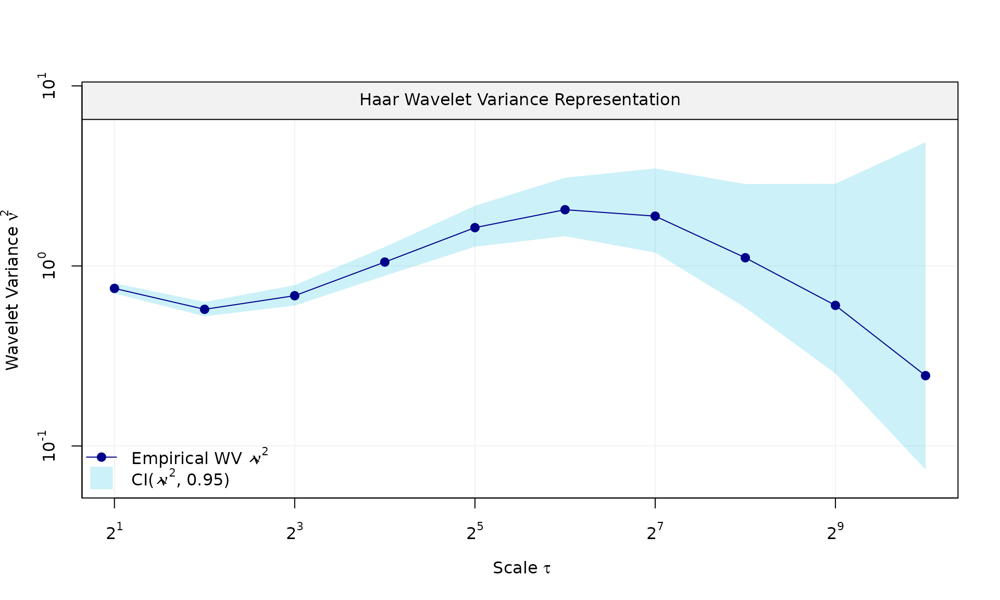
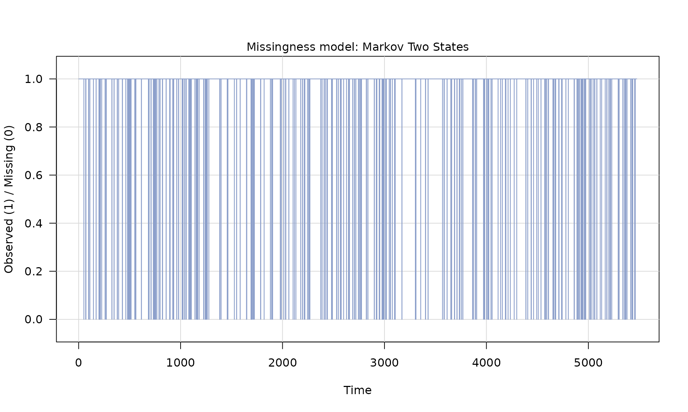
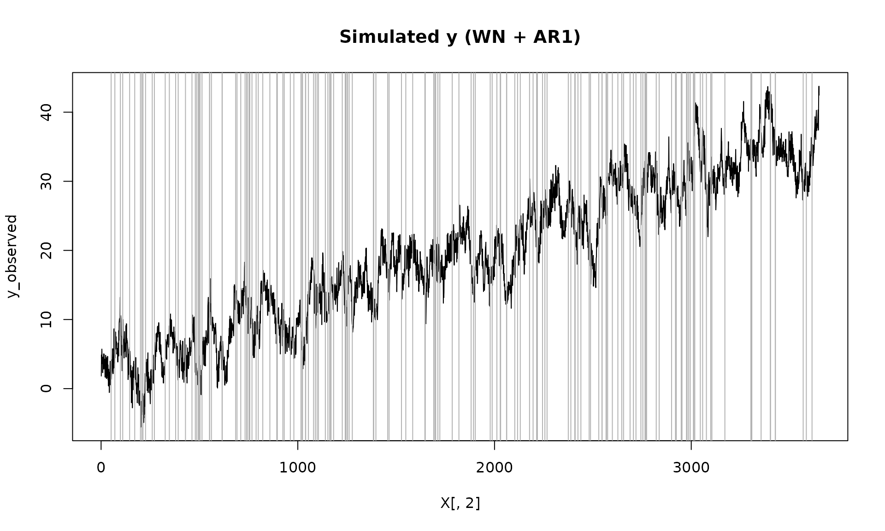
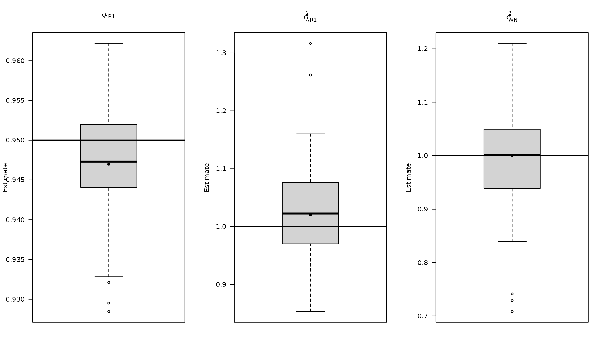
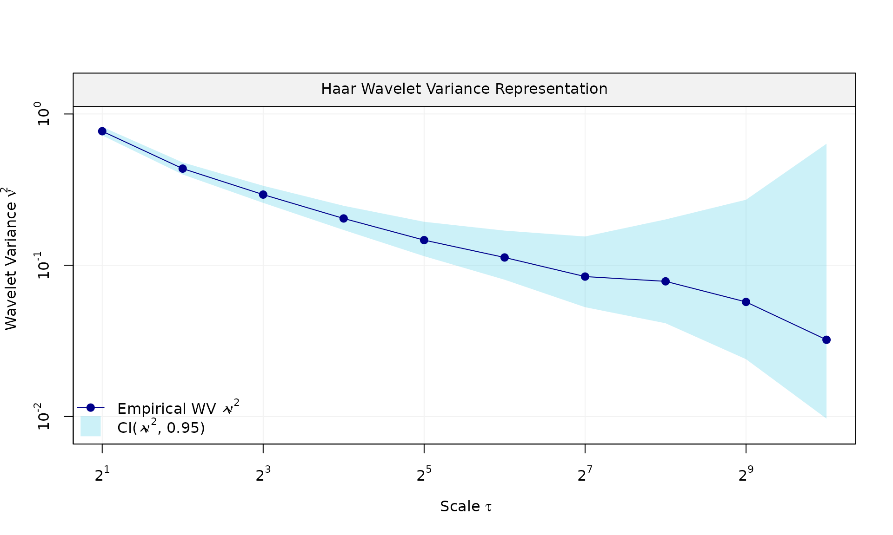
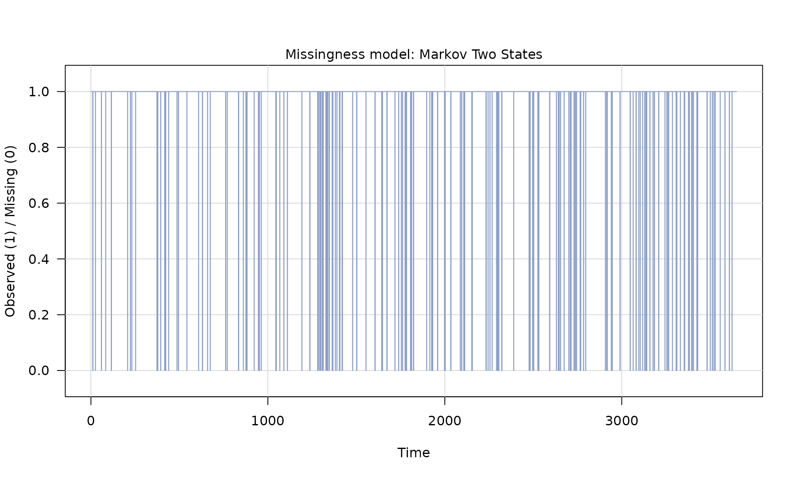
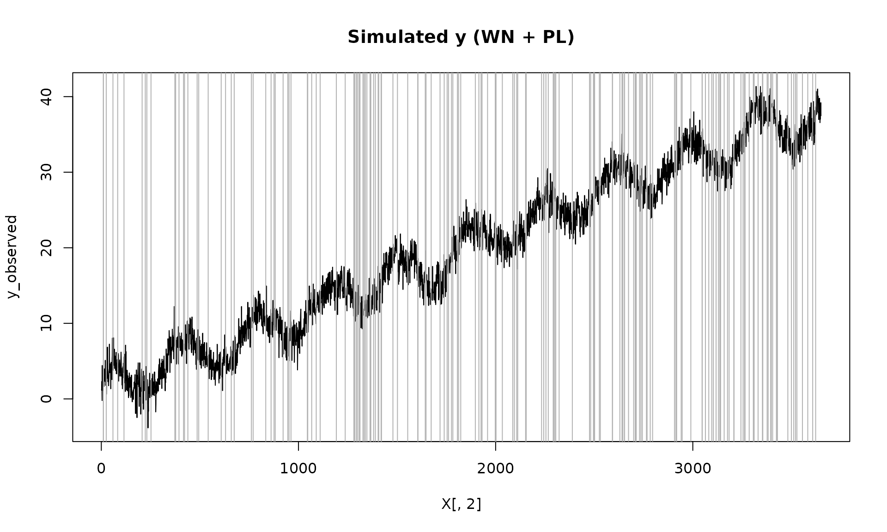
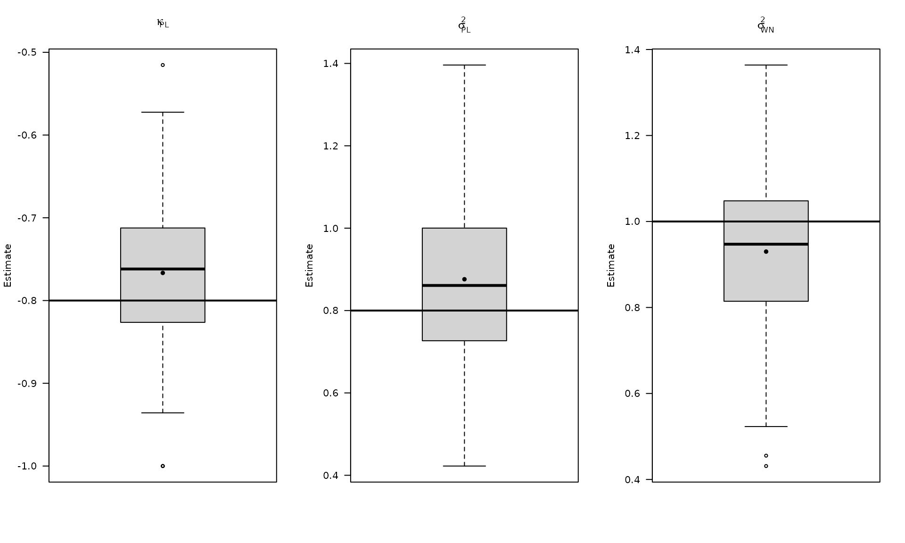
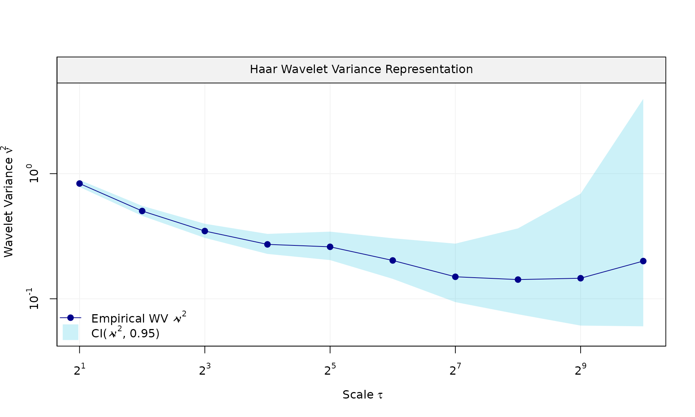
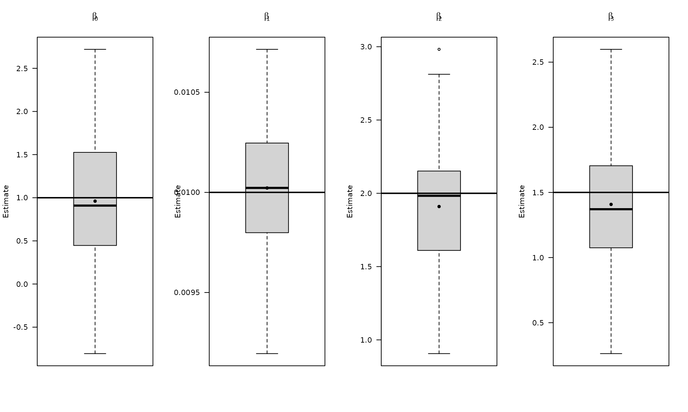

GMWMX: Estimate linear models with dependent errors and missing observations
Source:vignettes/estimate_linear_models_with_dependent_errors_and_missing_observations.Rmd
estimate_linear_models_with_dependent_errors_and_missing_observations.RmdThis vignette demonstrate on to use the GMWMX estimator to estimate linear models with dependent errors described by a composite stochastic process in presence of missing observations. Consider the model defined as:
Missingness is modeled by a binary process with indicating observation, and a missing observation with . The missingness process is independent of and respect the following definition: with expectation , for all , with covariance matrix whose structure is assumed known up to the parameter vector The observed series is
The design matrix with rows zeroed out for missing observations can be written as . The least‑squares estimator based on observed data is and we compute residuals .
We then estimate the parameters of the missingness process using maximum likelihood estimation, assuming a two state Markov model using the Maximum Likelihood Estimator.
We then estimate the stochastic parameters using the GMWM estimator:
where is the estimated wavelet variance computed on the estimated residuals and is the pre-computed estimator of the parameter , with being any positive-definite matrix.
The variance covariance matrix of the estimated regression parameters is then obtained as:
$$\begin{equation} \mu(\hat{\boldsymbol{\vartheta}})^{-2}(\mathbf{X}^{T}\mathbf{X})^{-1} \mathbf{X}^{T} \boldsymbol{\Sigma}(\hat{\boldsymbol{\gamma}}, \hat{\boldsymbol{\vartheta}})\mathbf{X} (\mathbf{X}^{T}\mathbf{X})^{-1}$ \end{equation}$$
Overall, these examples illustrate how gmwmx2_new()
supports inference for linear regression models with dependent errors in
presence of missing observations, and how the results compare to a naive
OLS fit that ignores dependence.
library(gmwmx2)
library(wv)
library(dplyr)
boxplot_mean_dot <- function(x, ...) {
boxplot(x, ...)
x_mat <- as.matrix(x)
mean_vals <- colMeans(x_mat, na.rm = TRUE)
points(seq_along(mean_vals), mean_vals, pch = 16, col = "black")
}We load the packages used for simulation, wavelet variance
diagnostics, and summary plots. The helper
boxplot_mean_dot() overlays Monte Carlo means on top of
each boxplot for easier comparison.
We first construct a design matrix with an intercept, linear trend, and annual seasonal components. This deterministic signal will be used across examples.
Build an arbitrary design matrix X
n = 10*365
X = matrix(NA, nrow = n, ncol = 4)
# intercept
X[, 1] = 1
# trend
X[, 2] = 1:n
# annual sinusoid
omega_1 <- (1 / 365.25) * 2 * pi
X[, 3] <- sin((1:n) * omega_1)
X[, 4] <- cos((1:n) * omega_1)
beta = c(1, 0.01, 2, 1.5)
# visualize the deterministic signal
plot(x = X[, 2], y = X %*% beta, type = "l",
main = "Signal", xlab = "Time", ylab = "Signal")
Next we simulate dependent errors, add them to the signal, and then
introduce missing observations using a two‑state Markov model. This is
the key difference from vignettes/gmwmx2_new.Rmd, which
uses fully observed data.
Example 1: White noise + AR(1)
Generate signal
phi_ar1 = 0.95
sigma2_ar1 = 1
sigma2_wn = 1
eps = generate(ar1(phi = phi_ar1, sigma2 = sigma2_ar1) + wn(sigma2_wn), n = n, seed = 123)$series
plot(wv::wvar(eps))
y = X %*% beta + eps
# generate missingness
mod_missing = markov_two_states(p1 = 0.05, p2 = .95)
Z = generate(mod_missing, n = n, seed = 123)
plot(Z)
Z_process = Z$series
y_observed = ifelse(Z_process == 1, y, NA)
plot(X[, 2], y_observed, type = "l", main = "Simulated y (WN + AR1)")
id_not_observed = which(is.na(y_observed))
for(i in id_not_observed){
abline(v = X[i, 2], col = "grey70", lty =1)
}
We then fit the dependent‑error regression using
gmwmx2_new(), which accounts for the stochastic error model
and the missing observations.
Fit model
fit = gmwmx2_new(X = X, y = y_observed, model = wn() + ar1() )
print(fit)## GMWMX fit
## Estimate Std.Error
## beta1 1.778606 0.702485
## beta2 0.009616 0.000333
## beta3 1.847444 0.467891
## beta4 0.947159 0.463950
##
## Missingness model
## Proportion missing : 0.0455
## p1 : 0.0451
## p2 : 0.9458
## p* : 0.9545
##
## Stochastic model
## Sum of 2 processes
## [1] White Noise
## Estimated parameters : sigma2 = 1.076
## [2] AR(1)
## Estimated parameters : phi = 0.9562, sigma2 = 0.8705
##
## Runtime (seconds)
## Total : 1.2232Monte Carlo simulation
We now assess inference quality under missingness by repeating the
simulation, fitting the correct dependent‑error model with
gmwmx2_new(), and comparing against a misspecified OLS fit
that treats the errors as i.i.d. and uses only observed data.
B = 100
mat_res = matrix(NA, nrow=B, ncol=19)
for(b in seq(B)){
eps = generate(ar1(phi=phi_ar1, sigma2=sigma2_ar1) + wn(sigma2_wn), n=n, seed = (123 + b))$series
y = X %*% beta + eps
Z = generate(mod_missing, n = n, seed = 123 + b)$series
y_observed = ifelse(Z == 1, y, NA)
fit = gmwmx2_new(X = X, y = y_observed, model = wn() + ar1() )
# mispecified model assuming white noise as the stochastic model and only on observed data
fit2 = lm(y_observed~X[,2] + X[,3] + X[,4])
mat_res[b, ] = c(fit$beta_hat, fit$std_beta_hat,
summary(fit2)$coefficients[,1],
summary(fit2)$coefficients[,2],
fit$theta_domain$`AR(1)_2`,
fit$theta_domain$`White Noise_1`)
# cat("Iteration ", b, " completed.\n")
}Plot empirical distributions of estimated parameters
# compute empirical coverage
mat_res_df = as.data.frame(mat_res)
colnames(mat_res_df) = c("gmwmx_beta0_hat", "gmwmx_beta1_hat",
"gmwmx_beta2_hat", "gmwmx_beta3_hat",
"gmwmx_std_beta0_hat", "gmwmx_std_beta1_hat",
"gmwmx_std_beta2_hat", "gmwmx_std_beta3_hat",
"lm_beta0_hat", "lm_beta1_hat", "lm_beta2_hat", "lm_beta3_hat",
"lm_std_beta0_hat", "lm_std_beta1_hat", "lm_std_beta2_hat", "lm_std_beta3_hat",
"phi_ar1","sigma_2_ar1" ,"sigma_2_wn")
par(mfrow = c(1, 4))
boxplot_mean_dot(mat_res_df[, c("gmwmx_beta0_hat")],las=1,
names = c("beta0"),
main = expression(beta[0]), ylab = "Estimate")
abline(h = beta[1], col = "black", lwd = 2)
boxplot_mean_dot(mat_res_df[, c("gmwmx_beta1_hat")],las=1,
names = c("beta1"),
main = expression(beta[1]), ylab = "Estimate")
abline(h = beta[2], col = "black", lwd = 2)
boxplot_mean_dot(mat_res_df[, c("gmwmx_beta2_hat")],las=1,
names = c("beta2"),
main = expression(beta[2]), ylab = "Estimate")
abline(h = beta[3], col = "black", lwd = 2)
boxplot_mean_dot(mat_res_df[, c("gmwmx_beta3_hat")],las=1,
names = c("beta3"),
main = expression(beta[3]), ylab = "Estimate")
abline(h = beta[4], col = "black", lwd = 2)
par(mfrow = c(1, 3))
boxplot_mean_dot(mat_res_df$phi_ar1,las=1,
names = c("phi_ar1"),
main = expression(phi["AR1"]), ylab = "Estimate")
abline(h = phi_ar1, col = "black", lwd = 2)
boxplot_mean_dot(mat_res_df$sigma_2_ar1,las=1,
names = c("phi_ar1"),
main = expression(sigma["AR1"]^2), ylab = "Estimate")
abline(h = sigma2_ar1, col = "black", lwd = 2)
boxplot_mean_dot(mat_res_df$sigma_2_wn,las=1,
names = c("phi_ar1"),
main = expression(sigma["WN"]^2), ylab = "Estimate")
abline(h = sigma2_wn, col = "black", lwd = 2)
The boxplots summarize the empirical distribution of the regression estimates and stochastic parameters across Monte Carlo replications, with the true values shown as horizontal lines.
We report the empirical fraction of times the true
entries fall inside the estimated intervals for both
gmwmx2_new() and OLS.
Compute empirical coverage of confidence intervals
# Compute empirical coverage of confidence intervals for beta
zval = qnorm(0.975)
mat_res_df$upper_ci_gmwmx_beta1 = mat_res_df$gmwmx_beta1_hat + zval * mat_res_df$gmwmx_std_beta1_hat
mat_res_df$lower_ci_gmwmx_beta1 = mat_res_df$gmwmx_beta1_hat - zval * mat_res_df$gmwmx_std_beta1_hat
# empirical coverage of gmwmx beta
dplyr::between(rep(beta[2], B), mat_res_df$lower_ci_gmwmx_beta1, mat_res_df$upper_ci_gmwmx_beta1) %>% mean()## [1] 0.91
# do the same for lm beta
mat_res_df$upper_ci_lm_beta1 = mat_res_df$lm_beta1_hat + zval * mat_res_df$lm_std_beta1_hat
mat_res_df$lower_ci_lm_beta1 = mat_res_df$lm_beta1_hat - zval * mat_res_df$lm_std_beta1_hat
dplyr::between(rep(beta[2], B), mat_res_df$lower_ci_lm_beta1, mat_res_df$upper_ci_lm_beta1) %>% mean()## [1] 0.25We now repeat the workflow for a long‑memory error model (white noise
+ stationary power‑law). The steps mirror the AR(1) case: simulate with
missingness, fit gmwmx2_new(), and compare to a
misspecified OLS fit.
The parameter controls the long‑memory behavior of the power‑law component.
Example 2: White noise + stationary power-law
Generate signal
kappa_pl <- -0.8
sigma2_wn <- 1
sigma2_pl <- .8
eps_pl = generate(wn(sigma2_wn) + pl(kappa = kappa_pl, sigma2 = sigma2_pl),
n = n, seed = 1234)
plot(eps_pl$series, type = "l")

Z_process = Z$series
y_observed = ifelse(Z_process == 1, y_pl, NA)
plot(X[, 2], y_observed, type = "l", main = "Simulated y (WN + PL)")
id_not_observed = which(is.na(y_observed))
for(i in id_not_observed){
abline(v = X[i, 2], col = "grey70", lty =1)
}
Fit model
fit_pl = gmwmx2_new(X = X, y = y_observed, model = wn() + pl())
fit_pl## GMWMX fit
## Estimate Std.Error
## beta1 0.86562 0.5214672
## beta2 0.01028 0.0001791
## beta3 2.19066 0.1051664
## beta4 1.51667 0.1029350
##
## Missingness model
## Proportion missing : 0.0485
## p1 : 0.0475
## p2 : 0.9322
## p* : 0.9515
##
## Stochastic model
## Sum of 2 processes
## [1] White Noise
## Estimated parameters : sigma2 = 0.8601
## [2] Stationary PowerLaw
## Estimated parameters : kappa = -0.7344, sigma2 = 0.9371
##
## Runtime (seconds)
## Total : 0.5859Monte Carlo simulation
B_pl = 100
mat_res_pl = matrix(NA, nrow = B_pl, ncol = 19)
for(b in seq(B_pl)){
eps = generate(wn(sigma2_wn) + pl(kappa = kappa_pl, sigma2 = sigma2_pl),
n = n, seed = (123 + b))$series
y = X %*% beta + eps
Z = generate(mod_missing, n = n, seed = (123 + b))
Z_process = Z$series
y_observed = ifelse(Z_process == 1, y, NA)
fit = gmwmx2_new(X = X, y = y_observed, model = wn() + pl())
fit2 = lm(y_observed~X[,2] + X[,3] + X[,4])
mat_res_pl[b, ] = c(fit$beta_hat, fit$std_beta_hat,
summary(fit2)$coefficients[,1],
summary(fit2)$coefficients[,2],
fit$theta_domain$`Stationary PowerLaw_2`,
fit$theta_domain$`White Noise_1`)
# cat("Iteration ", b, " \n")
}Plot empirical distributions of estimated parameters
mat_res_pl_df = as.data.frame(mat_res_pl)
colnames(mat_res_pl_df) = c("gmwmx_beta0_hat", "gmwmx_beta1_hat",
"gmwmx_beta2_hat", "gmwmx_beta3_hat",
"gmwmx_std_beta0_hat", "gmwmx_std_beta1_hat",
"gmwmx_std_beta2_hat", "gmwmx_std_beta3_hat",
"lm_beta0_hat", "lm_beta1_hat", "lm_beta2_hat", "lm_beta3_hat",
"lm_std_beta0_hat", "lm_std_beta1_hat",
"lm_std_beta2_hat", "lm_std_beta3_hat",
"kappa_pl","sigma2_pl" ,"sigma2_wn")
# Plot empirical distributions (beta and stochastic parameters)
par(mfrow = c(1, 4))
boxplot_mean_dot(mat_res_df[, c("gmwmx_beta0_hat")],las=1,
names = c("beta0"),
main = expression(beta[0]), ylab = "Estimate")
abline(h = beta[1], col = "black", lwd = 2)
boxplot_mean_dot(mat_res_df[, c("gmwmx_beta1_hat")],las=1,
names = c("beta1"),
main = expression(beta[1]), ylab = "Estimate")
abline(h = beta[2], col = "black", lwd = 2)
boxplot_mean_dot(mat_res_df[, c("gmwmx_beta2_hat")],las=1,
names = c("beta2"),
main = expression(beta[2]), ylab = "Estimate")
abline(h = beta[3], col = "black", lwd = 2)
boxplot_mean_dot(mat_res_df[, c("gmwmx_beta3_hat")],las=1,
names = c("beta3"),
main = expression(beta[3]), ylab = "Estimate")
abline(h = beta[4], col = "black", lwd = 2)
par(mfrow = c(1, 3))
boxplot_mean_dot(mat_res_pl_df$kappa_pl,las=1,
main = expression(kappa["PL"]), ylab = "Estimate")
abline(h = kappa_pl, col = "black", lwd = 2)
boxplot_mean_dot(mat_res_pl_df$sigma2_pl,las=1,
main = expression(sigma["PL"]^2), ylab = "Estimate")
abline(h = sigma2_pl, col = "black", lwd = 2)
boxplot_mean_dot(mat_res_pl_df$sigma2_wn,las=1,
names = c("phi_ar1"),
main = expression(sigma["WN"]^2), ylab = "Estimate")
abline(h = sigma2_wn, col = "black", lwd = 2)
Compute empirical coverage for the regression coefficients under the power‑law error model and compare against OLS.
Compute empirical coverage of confidence intervals
zval = qnorm(0.975)
mat_res_pl_df$upper_ci_gmwmx_beta1 = mat_res_pl_df$gmwmx_beta1_hat + zval * mat_res_pl_df$gmwmx_std_beta1_hat
mat_res_pl_df$lower_ci_gmwmx_beta1 = mat_res_pl_df$gmwmx_beta1_hat - zval * mat_res_pl_df$gmwmx_std_beta1_hat
# empirical coverage of gmwmx beta
dplyr::between(rep(beta[2], B_pl), mat_res_pl_df$lower_ci_gmwmx_beta1, mat_res_pl_df$upper_ci_gmwmx_beta1) %>% mean()## [1] 0.89
# do the same for lm beta
mat_res_pl_df$upper_ci_lm_beta1 = mat_res_pl_df$lm_beta1_hat + zval * mat_res_pl_df$lm_std_beta1_hat
mat_res_pl_df$lower_ci_lm_beta1 = mat_res_pl_df$lm_beta1_hat - zval * mat_res_pl_df$lm_std_beta1_hat
dplyr::between(rep(beta[2], B_pl), mat_res_pl_df$lower_ci_lm_beta1, mat_res_pl_df$upper_ci_lm_beta1) %>% mean()## [1] 0.15Example 3: White noise + flicker
Generate signal
sigma2_wn_fl <- 1
sigma2_fl <- 1
eps_fl = generate(wn(sigma2_wn_fl) + flicker(sigma2 = sigma2_fl),
n = n, seed = 123)
plot(eps_fl$series, type = "l")

Fit model
fit_fl = gmwmx2_new(X = X, y = y_observed, model = wn() + flicker())
fit_fl## GMWMX fit
## Estimate Std.Error
## beta1 0.44556 0.8698443
## beta2 0.01013 0.0004128
## beta3 1.95655 0.1746552
## beta4 1.53098 0.1689793
##
## Missingness model
## Proportion missing : 0.0485
## p1 : 0.0475
## p2 : 0.9322
## p* : 0.9515
##
## Stochastic model
## Sum of 2 processes
## [1] White Noise
## Estimated parameters : sigma2 = 1.092
## [2] Flicker
## Estimated parameters : sigma2 = 0.8848
##
## Runtime (seconds)
## Total : 1.2006Monte Carlo simulation
B_fl = 100
mat_res_fl = matrix(NA, nrow = B_fl, ncol = 18)
for(b in seq(B_fl)){
eps = generate(wn(sigma2_wn_fl) + flicker(sigma2 = sigma2_fl),
n = n, seed = (123 + b))$series
y = X %*% beta + eps
Z = generate(mod_missing, n = n, seed = (123 + b))
Z_process = Z$series
y_observed = ifelse(Z_process == 1, y, NA)
fit = gmwmx2_new(X = X, y = y_observed, model = wn() + flicker())
fit2 = lm(y_observed~X[,2] + X[,3] + X[,4])
mat_res_fl[b, ] = c(fit$beta_hat, fit$std_beta_hat,
summary(fit2)$coefficients[,1],
summary(fit2)$coefficients[,2],
fit$theta_domain$`Flicker_2`,
fit$theta_domain$`White Noise_1`)
# cat("Iteration ", b, " \n")
}Plot empirical distributions of estimated parameters
mat_res_fl_df = as.data.frame(mat_res_fl)
colnames(mat_res_fl_df) = c("gmwmx_beta0_hat", "gmwmx_beta1_hat",
"gmwmx_beta2_hat", "gmwmx_beta3_hat",
"gmwmx_std_beta0_hat", "gmwmx_std_beta1_hat",
"gmwmx_std_beta2_hat", "gmwmx_std_beta3_hat",
"lm_beta0_hat", "lm_beta1_hat", "lm_beta2_hat", "lm_beta3_hat",
"lm_std_beta0_hat", "lm_std_beta1_hat",
"lm_std_beta2_hat", "lm_std_beta3_hat",
"sigma2_fl" ,"sigma2_wn")
par(mfrow = c(1, 4))
boxplot_mean_dot(mat_res_df[, c("gmwmx_beta0_hat")],las=1,
names = c("beta0"),
main = expression(beta[0]), ylab = "Estimate")
abline(h = beta[1], col = "black", lwd = 2)
boxplot_mean_dot(mat_res_df[, c("gmwmx_beta1_hat")],las=1,
names = c("beta1"),
main = expression(beta[1]), ylab = "Estimate")
abline(h = beta[2], col = "black", lwd = 2)
boxplot_mean_dot(mat_res_df[, c("gmwmx_beta2_hat")],las=1,
names = c("beta2"),
main = expression(beta[2]), ylab = "Estimate")
abline(h = beta[3], col = "black", lwd = 2)
boxplot_mean_dot(mat_res_df[, c("gmwmx_beta3_hat")],las=1,
names = c("beta3"),
main = expression(beta[3]), ylab = "Estimate")
abline(h = beta[4], col = "black", lwd = 2)
par(mfrow = c(1, 2))
boxplot_mean_dot(mat_res_fl_df$sigma2_fl,las=1,
main = expression(sigma["FL"]^2), ylab = "Estimate")
abline(h = sigma2_fl, col = "black", lwd = 2)
boxplot_mean_dot(mat_res_fl_df$sigma2_wn,las=1,
names = c("phi_ar1"),
main = expression(sigma["WN"]^2), ylab = "Estimate")
abline(h = sigma2_wn_fl, col = "black", lwd = 2)
Compute empirical coverage of confidence intervals
# Compute empirical coverage of confidence intervals for beta
zval = qnorm(0.975)
mat_res_fl_df$upper_ci_gmwmx_beta1 = mat_res_fl_df$gmwmx_beta1_hat + zval * mat_res_fl_df$gmwmx_std_beta1_hat
mat_res_fl_df$lower_ci_gmwmx_beta1 = mat_res_fl_df$gmwmx_beta1_hat - zval * mat_res_fl_df$gmwmx_std_beta1_hat
# empirical coverage of gmwmx beta
dplyr::between(rep(beta[2], B_fl), mat_res_fl_df$lower_ci_gmwmx_beta1, mat_res_fl_df$upper_ci_gmwmx_beta1) %>% mean()## [1] 0.93
# do the same for lm beta
mat_res_fl_df$upper_ci_lm_beta1 = mat_res_fl_df$lm_beta1_hat + zval * mat_res_fl_df$lm_std_beta1_hat
mat_res_fl_df$lower_ci_lm_beta1 = mat_res_fl_df$lm_beta1_hat - zval * mat_res_fl_df$lm_std_beta1_hat
dplyr::between(rep(beta[2], B_fl), mat_res_fl_df$lower_ci_lm_beta1, mat_res_fl_df$upper_ci_lm_beta1) %>% mean()## [1] 0.07